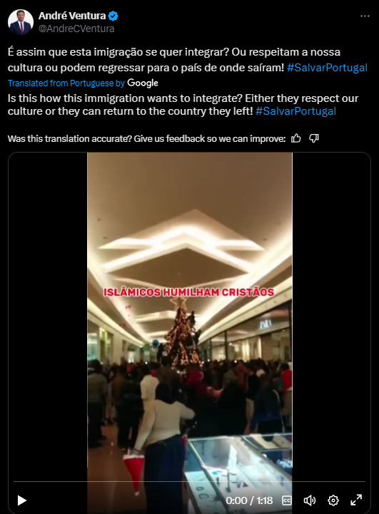

Atividade de André Ventura no Twitter
No dia 5 de dezembro, André Ventura criticou a imigração, utilizando um vídeo como exemplo
Nesta mensagem, André Ventura usa um vídeo como exemplo para criticar a imigração, encorrendo em múltiplas falácias.
Em primeiro lugar, Ventura cria um falso dilema ao afirmar o seguinte:
"Ou respeitam a nossa cultura ou podem regressar para o país de onde saíram!"
Ventura usa esta falácia para atacar esta minoria.

Em segundo lugar, André Ventura faz também uma omissão de dados, porque:
O vídeo que usa como exemplo de imigrantes a desrespeitar a cultura portuguesa foi publicado em 2016.
O vídeo não representa muçulmanos a atacar uma árvore de natal, foi apenas mal interpretada.